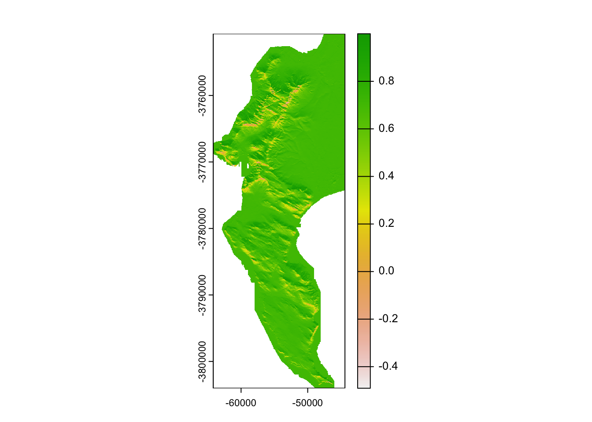
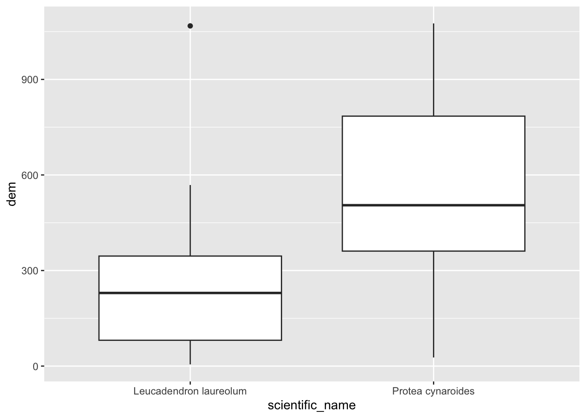
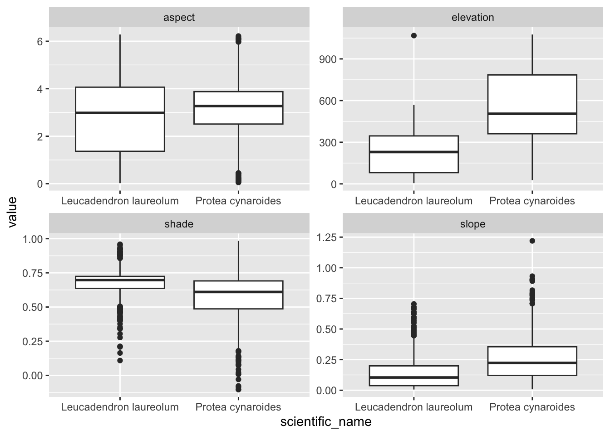
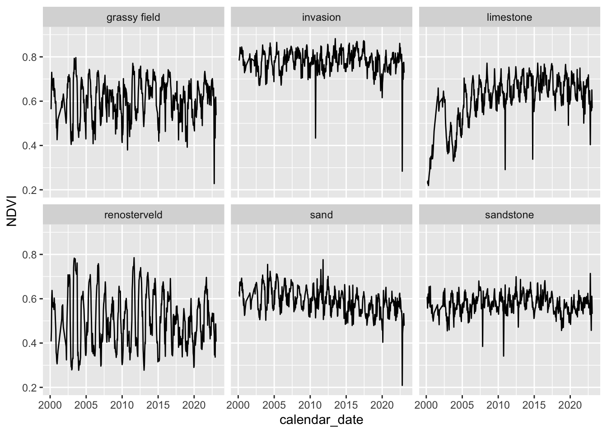

8 Raster GIS operations in R with terra
8.1 Reading in data
Ok, now to look at handling rasters. As with sf, the terra package has one function -rast()- that can read in just about any raster file format, which it assigns it’s own class SpatRaster. Let’s get started and read in the digital elevation model (DEM) for the City of Cape Town.
## [1] "SpatRaster"
## attr(,"package")
## [1] "terra"## class : SpatRaster
## dimensions : 9902, 6518, 1 (nrow, ncol, nlyr)
## resolution : 10, 10 (x, y)
## extent : -64180, 1000, -3804020, -3705000 (xmin, xmax, ymin, ymax)
## coord. ref. : GCS_WGS_1984
## source : CoCT_10m.tif
## name : 10m_BA
## min value : -35
## max value : 1590The coord. ref. field shows GCS_WGS_1984, which is Geographic Coordinates, but perhaps there is a projected CRS too? The extent appears to be in metres, with the eastings being a mix of positive and negative numbers, from which we can deduce that the coordinate reference system may be Transverse Mercator centred on Lo19, as for the other datasets we obtained from the City of Cape Town. Best to make sure! If you just want to know the CRS from a SpatRaster, you just call crs() like so:
## [1] "PROJCRS[\"GCS_WGS_1984\",\n BASEGEOGCRS[\"WGS 84\",\n DATUM[\"World Geodetic System 1984\",\n ELLIPSOID[\"WGS 84\",6378137,298.25722356049,\n LENGTHUNIT[\"metre\",1]]],\n PRIMEM[\"Greenwich\",0,\n ANGLEUNIT[\"degree\",0.0174532925199433]],\n ID[\"EPSG\",4326]],\n CONVERSION[\"Transverse Mercator\",\n METHOD[\"Transverse Mercator\",\n ID[\"EPSG\",9807]],\n PARAMETER[\"Latitude of natural origin\",0,\n ANGLEUNIT[\"degree\",0.0174532925199433],\n ID[\"EPSG\",8801]],\n PARAMETER[\"Longitude of natural origin\",19,\n ANGLEUNIT[\"degree\",0.0174532925199433],\n ID[\"EPSG\",8802]],\n PARAMETER[\"Scale factor at natural origin\",1,\n SCALEUNIT[\"unity\",1],\n ID[\"EPSG\",8805]],\n PARAMETER[\"False easting\",0,\n LENGTHUNIT[\"metre\",1],\n ID[\"EPSG\",8806]],\n PARAMETER[\"False northing\",0,\n LENGTHUNIT[\"metre\",1],\n ID[\"EPSG\",8807]]],\n CS[Cartesian,2],\n AXIS[\"easting\",east,\n ORDER[1],\n LENGTHUNIT[\"metre\",1,\n ID[\"EPSG\",9001]]],\n AXIS[\"northing\",north,\n ORDER[2],\n LENGTHUNIT[\"metre\",1,\n ID[\"EPSG\",9001]]]]"Messy, but somewhere in there it says “Longitude of natural origin 19” and “Transverse Mercator”…
Similar to st_crs(), you can define a projection using the syntax:
crs(your_raster) <- "your_crs", where the new CRS can be in WKT, and EPSG code, or a PROJ string.
For reprojecting, you use the function project(). We’ll look at it later.
8.2 Cropping
Ok, before we try to anything with this dataset, let’s think about how big it is… One of the outputs of calling dem was the row reading dimensions : 9902, 6518, 1 (nrow, ncol, nlyr). Given that we are talking about 10m pixels, this information tells us that the extent of the region is roughly 100km by 65km and that there are ~65 million pixels! No wonder the original file was ~130MB (I reduced the one I shared with you slightly).
While R can handle this, it does become slow when dealing with very large files. There are many ways to improve the efficiency of handling big rasters in R (see this slightly dated post for details if you’re interested), but for the purposes of this tutorial we’re going to take the easy option and just crop it to a smaller extent, like so:
Note that the crop() function requires us to pass it an object of class SpatExtent. Just like st_crop() from sf, crop() can derive the extent from another data object.
One silly difference, is that if you pass it the coordinates of the extent manually (as above), you first need to pass it to the ext() function, and they need to follow the order xmin, xmax, ymin, ymax (as opposed to xmin, ymin, xmax, ymax as you do for st_crop()). Keep your eye out for these little differences, because they will trip you up…
Ok, so how big is our dataset now?
## class : SpatRaster
## dimensions : 5330, 1977, 1 (nrow, ncol, nlyr)
## resolution : 10, 10 (x, y)
## extent : -64180, -44410, -3804020, -3750720 (xmin, xmax, ymin, ymax)
## coord. ref. : GCS_WGS_1984
## source(s) : memory
## varname : CoCT_10m
## name : 10m_BA
## min value : -15
## max value : 1084…still >10 million pixels…
8.3 Aggregating / Resampling
Do we need 10m data? If your analysis doesn’t need such fine resolution data, you can resample the raster to a larger pixel size, like 30m. The aggregate() function does this very efficiently, like so:
##
|---------|---------|---------|---------|
=========================================
Here I’ve told it to aggregate by a factor of 3 (i.e. bin 9 neighbouring pixels (3x3) into one) and to assign the bigger pixel the mean of the 9 original pixels. This obviously results in some data loss, but that can be acceptable, depending on the purpose of your analysis. Note that you can pass just about any function to fun =, like min(), max() or even your own function.
## class : SpatRaster
## dimensions : 1777, 659, 1 (nrow, ncol, nlyr)
## resolution : 30, 30 (x, y)
## extent : -64180, -44410, -3804030, -3750720 (xmin, xmax, ymin, ymax)
## coord. ref. : GCS_WGS_1984
## source(s) : memory
## name : 10m_BA
## min value : -15.000
## max value : 1083.556Ok, so we’ve reduced the size of the raster by a factor of 9 and only have a little over 1 million pixels to deal with. Much more reasonable! Now let’s have a look at what we’re dealing with.
8.4 Basic plotting
Now that we’ve reduced the size of the dataset, we can try the base plotting function:

Or with the Tidyverse…
Note that ggplot() doesn’t accept rasters, so we need to give it a dataframe with x and y columns for the coordinates, and a column containing the values to plot. This is easily done by coercing the raster into a dataframe, like so:
#call tidyverse libraries and plot
library(tidyverse)
dem30 %>% as.data.frame(xy = TRUE) %>%
ggplot() +
geom_raster(aes(x = x, y = y, fill = `10m_BA`))
# Note that I had to know that the column name for the elevation data is "10m_BA"... and that you need to use ` ` around a variable name when feeding it to a function if it starts with a digit.Ok, how different does our 30m raster look to the 10m version?

Not noticeably different at this scale!
8.5 Disaggregating
One way to explore the degree of data loss is to disagg() our 30m DEM back to 10m and then compare it to the original.
Note that I’ve tried to use bilinear interpolation to give it a fair chance of getting nearer the original values. You can google this on your own, but it essentially smooths the data by averaging across neighbouring pixels.
Now, how can I compare my two 10m rasters?
8.6 Raster maths!
The raster and terra packages make this easy, because you can do maths with rasters, treating them as variables in an equation. This means we can explore the data loss by calculating the difference between the original and disaggregated DEMS.
Note that when aggregating you often lose some of the cells along the edges, and that you can’t do raster maths on rasters with different extents… We can fix this by cropping the larger raster with the smaller first.
And plot the result!

If you look really closely, you’ll see the outline of the cliffs of Table Mountain, where you’d expect the data loss to be worst. The colour ramp tells us that the worst distortion was up to 100m, or about 10% of the elevation range in this dataset, but don’t be fooled by the extremes! Let’s have a look at all the values as a histogram.
## `stat_bin()` using `bins = 30`. Pick better value with `binwidth`.
Looks like most values are within 10 or so metres of their original values, so the data loss really wasn’t that bad!
8.7 Focal and terrain calculations
In addition to maths with multiple rasters, you can do all kinds of calculations within a raster using focal(). This essentially applies a moving window, calculating values for a neighbourhood of cells as it goes, using whatever function you supply (mean, max, your own, etc).
The function terrain() is a special case of focal(), optimized for calculating slope, aspect, topographic position index (TPI), topographic roughness index (TRI), roughness, or flow direction.
Here I’ll calculate the slope and aspect so that we can pass them to the function shade() to make a pretty hillshade layer.
aspect <- terrain(dem30, "aspect", unit = "radians")
slope <- terrain(dem30, "slope", unit = "radians")
hillshade <- shade(slope, aspect)
plot(hillshade)
Probably prettier with Tidyverse:
hillshade %>%
as.data.frame(xy = TRUE) %>%
ggplot() +
geom_raster(aes(x = x, y = y, fill = hillshade)) + #note that the hillshade column name in this case is "hillshade"
scale_fill_gradient(low = "grey10", high = "grey90")
Nice ne?
8.8 Raster stacks
Another nice thing about rasters is that if you have multiple rasters “on the same grid” (i.e. with the same pixel size, extent and CRS) then you can stack them and work with them as a single object. library(raster) users will be familiar with stack(), but in terra you just use the base function c(), like so:
## class : SpatRaster
## dimensions : 1777, 659, 4 (nrow, ncol, nlyr)
## resolution : 30, 30 (x, y)
## extent : -64180, -44410, -3804030, -3750720 (xmin, xmax, ymin, ymax)
## coord. ref. : GCS_WGS_1984
## source(s) : memory
## names : 10m_BA, slope, aspect, hillshade
## min values : -15.000, 0.000000, 0.000000, -0.4906481
## max values : 1083.556, 1.370826, 6.283185, 0.9999974As you can see the “dimensions” now report 4 layers, and there are 4 names. Some of the names don’t look all that informative though, so let’s rename them.
8.9 Extracting raster to vector
Ok, enough fooling around. More often than not, we just want to extract data from rasters for further analyses (e.g. climate layers, etc), so let’s cover that base here.
Extract to points
First, let’s get some points for two species in the Proteaceae, Protea cynaroides and Leucadendron laureolum…
library(rinat)
library(sf)
#Call data for two species directly from iNat
pc <- get_inat_obs(taxon_name = "Protea cynaroides",
bounds = c(-35, 18, -33.5, 18.5),
maxresults = 1000)
ll <- get_inat_obs(taxon_name = "Leucadendron laureolum",
bounds = c(-35, 18, -33.5, 18.5),
maxresults = 1000)
#Combine the records into one dataframe
pc <- rbind(pc,ll)
#Filter returned observations by a range of attribute criteria
pc <- pc %>% filter(positional_accuracy<46 &
latitude<0 &
!is.na(latitude) &
captive_cultivated == "false" &
quality_grade == "research")
#Make the dataframe a spatial object of class = "sf"
pc <- st_as_sf(pc, coords = c("longitude", "latitude"), crs = 4326)
#Set to the same projection as the elevation data
pc <- st_transform(pc, crs(dem30))Now let’s extract the data to the points.
NOTE!!! terra doesn’t play nicely with sf objects at this stage, so you need to coerce them into terra’s own vector format using vect().
## ID 10m_BA
## 1 1 1024.5556
## 2 2 1052.1111
## 3 3 528.6667
## 4 4 530.8889
## 5 5 1014.4444
## 6 6 1062.4444Nice, but not all that handy on it’s own. Let’s add the elevation column to our points layer, so we can match it with the species names and plot.

A clear separation in the preferred elevation range between the two species.
Ok, that’s handy, but what if we have data lots of rasters? We don’t want to have to do that for every raster! This is where raster stacks come into their own!
#extract from stack
dat <- extract(dstack, vect(pc))
#bind columns to points to match the names
edat <- cbind(as.data.frame(pc), dat)
#select columns we want and tidy data into long format
edat <- edat %>%
dplyr::select(scientific_name, elevation, slope, aspect, shade) %>%
pivot_longer(c(elevation, slope, aspect, shade))
#panel boxplot of the variables extracted
edat %>% ggplot() +
geom_boxplot(aes(scientific_name, value)) +
facet_wrap(~name, scales = "free") 
Something I should have mentioned is that if you would like each point to sample a larger region you can add a buffer = argument to the extract() function, and a function (fun =) to summarize the neighbourhood of pixels sampled, like so:
pc$dem30 <- extract(dem30, vect(pc), buffer = 200, fun = mean)$`10m_BA` #Note the sneaky use of $ to access the column I want
pc %>% ggplot() +
geom_boxplot(aes(scientific_name, dem30))Extract to polygons
Now let’s try that with our vegetation polygons.
#Get historical vegetation layer
veg <- st_read("data/cape_peninsula/veg/Vegetation_Indigenous.shp")## Reading layer `Vegetation_Indigenous' from data source
## `/Users/jasper/GIT/spatial-r/data/cape_peninsula/veg/Vegetation_Indigenous.shp'
## using driver `ESRI Shapefile'
## Simple feature collection with 1325 features and 5 fields
## Geometry type: POLYGON
## Dimension: XY
## Bounding box: xmin: -63972.95 ymin: -3803535 xmax: 430.8125 ymax: -3705149
## Projected CRS: WGS_1984_Transverse_Mercator#Crop to same extent as DEM
veg <- st_crop(veg, ext(dem30)) #Note that I just fed it the extent of the DEM## Warning: attribute variables are assumed to be spatially constant throughout all geometries#Best to dissolve polygons first - otherwise you get repeat outputs for each polygon within each veg type
vegsum <- veg %>% group_by(National_) %>%
summarize()
#Do extraction - note the summary function
vegdem <- extract(dem30, vect(vegsum), fun = mean, na.rm = T)## Warning: [extract] transforming vector data to the CRS of the raster#Combine the names and vector extracted means into a dataframe
vegdem <- cbind(vegdem, vegsum$National_)
#Rename the columns to something meaningful
names(vegdem) <- c("ID", "Mean elevation (m)", "Vegetation type")
#Plot
vegdem %>% ggplot() +
geom_col(aes(y = `Mean elevation (m)`, x = `Vegetation type`)) +
theme(axis.text.x = element_text(angle = 90, vjust = 0.5, hjust=1))
Ok, I did a lot of things there…, but you get it right? Note that I applied a function to the extract() to summarize the output, because each polygon usually returns multiple raster cell values. You can choose (or code up) your own function.
Here’s a different approach…
8.10 Rasterizing
Rasterizing essentially means turning a vector layer into a raster. To rasterize, you need an existing raster grid to rasterize to, like dem30 in this case.
#Make the vegetation type a factor
vegsum$National_ <- as.factor(vegsum$National_)
#Rasterize
vegras <- rasterize(vect(vegsum), dem30, field = "National_")
#Plot
vegras %>%
as.data.frame(xy = TRUE) %>%
ggplot() +
geom_raster(aes(x = x, y = y, fill = National_))I’m sure this plot is a surprise to those who worked with raster. Usually rasters want to work with numbers. terra can work with (and rasterize) data of class “factor”, opening up all kinds of opportunities.
But once you have a raster of class factor and a raster with values, you can stack and unpack them into a dataframe and analyse them as you would usually.
#Stack the two rasters
vegdem <- c(vegras, dem30)
#Convert to data frame
vegdem_df <- as.data.frame(vegdem)
#Plot
vegdem_df %>%
group_by(National_) %>%
summarise(`Mean elevation (m)` = mean(`10m_BA`, na.rm = T)) %>%
ggplot() +
geom_col(aes(y = `Mean elevation (m)`, x = `National_`)) +
theme(axis.text.x = element_text(angle = 90, vjust = 0.5, hjust=1))
Tadaa! Same figure we made before, but we took a different route this time. The ability to turn stacked rasters into dataframes and analyse them “non-spatially” can be very powerful. There are also a bunch of functions that make this even easier.
8.11 Crosstabulating rasters
Say we had two rasters that each contained factor data (i.e. discrete) and we wanted to look at the frequency of associations between the two sets of classes? We can very easily do this with the function crosstab().
Here’s an example looking at slope classes by vegetation type. First, we classify our slope raster into discrete classes, then we cross-tabulate the classified slope raster with our raster of vegetation types.
# Classify the slope raster into 5 classes
slopeclass <- classify(slope, c(0, 0.3, 0.6, 0.9, 1.2, 1.4), include.lowest=TRUE)
plot(slopeclass)
## slope
## National_ (0.3–0.6] (0.6–0.9] (0.9–1.2] (1.2–1.4] [0–0.3]
## Beach - FalseBay 360 165 40 0 2607
## Cape Estuarine Salt Marshes 0 0 0 0 123
## Cape Flats Dune Strandveld - False Bay 2890 820 101 0 41433
## Cape Flats Dune Strandveld - West Coast 0 0 0 0 7162
## Cape Flats Sand Fynbos 3 0 0 0 108940
## Cape Lowland Freshwater Wetlands 0 0 0 0 6604
## Hangklip Sand Fynbos 2819 141 8 0 33647
## Peninsula Granite Fynbos - North 11037 508 8 0 11445
## Peninsula Granite Fynbos - South 13425 2079 335 16 63627
## Peninsula Sandstone Fynbos 58525 20674 4167 191 160146
## Peninsula Shale Fynbos 2989 340 45 0 10660
## Peninsula Shale Renosterveld 2441 67 0 0 23969
## RECLAIMED 36 3 0 0 6436
## Southern Afrotemperate Forest 1748 483 78 3 1534This function is particularly useful for something like comparing land cover datasets from 2 time points. Also have a look at freq and zonal.
8.12 Visualizing multiple datasets on one map
What about if we want to plot multiple datasets on one map?
This is easy, if you can feed each dataset into a separate ggplot function. Here’s the veg types with contours and the iNaturalist records we retrieved earlier.
ggplot() +
geom_raster(data = as.data.frame(vegras, xy = TRUE),
aes(x = x, y = y, fill = National_)) +
geom_contour(data = as.data.frame(dem30, xy = TRUE),
aes(x = x, y = y, z = `10m_BA`), breaks = seq(0, 1100, 100), colour = "black") +
geom_sf(data=pc, colour = "white", size = 0.5)
For more inspiration on mapping with R, check out https://slingsby-maps.myshopify.com/. I’ve been generating the majority of the basemap (terrain colour, hillshade, contours, streams, etc) for these in R for the past few years.
8.13 Cloud Optimized GeoTiffs (COGs)!!!
I thought I’d add this as a bonus section, reinforcing the value of standardized open metadata and file formats from the Data Management module.
First, let’s open a connection to our COG, which is stored in the cloud. To do this, we need to pass a URL to the file’s online location to terra.
cog.url <- "/vsicurl/https://mnemosyne.somisana.ac.za/osgeo/saeon_rgb/grootbos.tif"
grootbos <- rast(cog.url)
grootbos## class : SpatRaster
## dimensions : 100024, 121627, 3 (nrow, ncol, nlyr)
## resolution : 0.08, 0.08 (x, y)
## extent : 35640.41, 45370.57, -3828176, -3820175 (xmin, xmax, ymin, ymax)
## coord. ref. : LO19
## source : grootbos.tif
## colors RGB : 1, 2, 3
## names : grootbos_1, grootbos_2, grootbos_3This has given us the metadata about the file, but has not read it into R’s memory. The file is ~1.8GB so it would do bad things if we tried to read the whole thing in…
Now let’s retrieve a subset of the file. To do this we need to make a vector polygon for our region of interest (ROI), like so:
roi <- vect(data.frame(lon = c(19.433975, 19.436451),
lat = c(-34.522733, -34.520735)),
crs = "epsg:4326")And transform it to the same projection as the COG:
And then extract our ROI
## class : SpatRaster
## dimensions : 2758, 2853, 3 (nrow, ncol, nlyr)
## resolution : 0.08, 0.08 (x, y)
## extent : 39845.61, 40073.85, -3821732, -3821512 (xmin, xmax, ymin, ymax)
## coord. ref. : LO19
## source(s) : memory
## colors RGB : 1, 2, 3
## varname : grootbos
## names : grootbos_1, grootbos_2, grootbos_3
## min values : 28, 47, 56
## max values : 255, 255, 255Now we have a raster with 3 layers in memory. There are Red Green and Blue, so we should be able to plot them, like so:
This somewhat arbitrary looking site is where we did some fieldwork in the Grootbos Private Nature Reserve with the 2022 class…
8.14 Obtaining satellite data from APIs
There are also R packages like MODISTools that allow you to query the online databases.
MODISTools interfaces with the ‘MODIS Land Products Subsets’ Web Services to download various products. In this case we’ll be downloading the “MOD13Q1” product, which is the Vegetation Indices product for the Terra satellite, generated every 16 days at 250 meter (m) spatial resolution. The algorithm chooses the best available pixel value from all (daily) the acquisitions from the 16 day period, minimizing clouds, low view angle, and selecting the highest NDVI/EVI value.
WARNING! This code can take a while to run! Hence, I have wrapped it in an if() statement that tells the code not to run if the file already exists.
if(!file.exists("data/MODISdat_batch_30Jan2023.csv")) # if the file does not exist, then run... otherwise do nothing...
{
library(MODISTools)
sites <- data.frame(site_name = c("grassy field", "invasion", "renosterveld", "sand", "sandstone", "limestone"),
lat = c(-34.375052, -34.386014, -34.374259, -34.3961, -34.3748, -34.4309),
lon = c(20.531749, 20.534986, 20.504233, 20.5494, 20.5428, 20.5666))
### Here's some code if you want to use an existing layer of points instead of entering them manually
# sites <- st_read("/home/jasper/GIT/BIO3018F/prac/Potberg_prac_sites.kml")
# sites <- data.frame(site_name = sites$Name, lat = st_coordinates(sites)[,2], lon = st_coordinates(sites)[,1])
dat <- mt_batch_subset(df = sites,
product = "MOD13Q1",
band = "250m_16_days_NDVI",
internal = TRUE,
start = "2000-01-01",
end = "2023-01-30")
write_csv(dat, "data/MODISdat_batch_30Jan2023.csv")
}Plot all time series
read_csv("data/MODISdat_batch_30Jan2023.csv") %>%
ggplot(aes(x = calendar_date, y = value*0.0001)) +
geom_line() +
# geom_point() +
facet_wrap(.~ site) +
ylab("NDVI") +
ylim(0.2, 0.9)
There are many more complex spatial and remote sensing analyses you can do by interaction with the cloud from R. Here are some links to a few:
- Cloud-based processing of satellite image collections with
rstacandgdalcubes - Run Google Earth Engine from R with
rgee - Obtain spatial data from ESRI REST APIs in R or see package
arcpullr
There are many more!!!